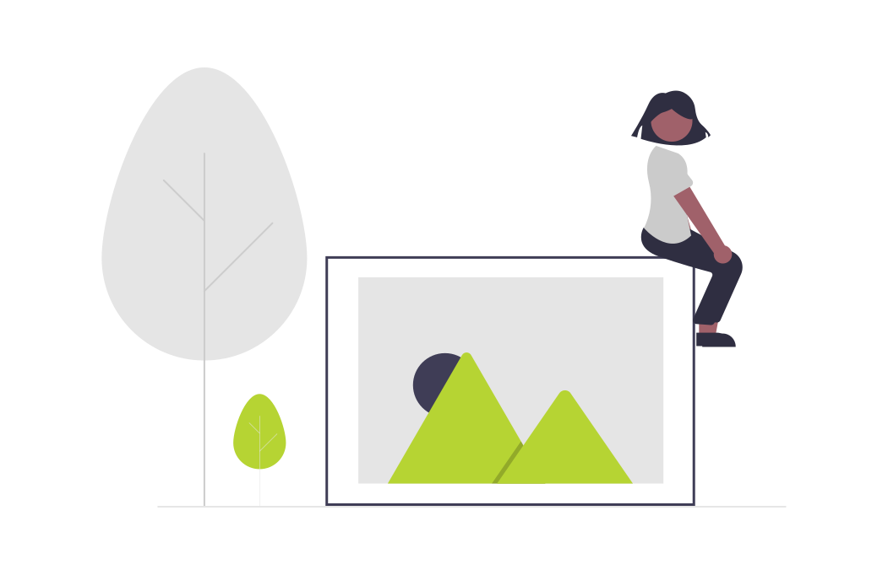

<ion-content [fullscreen]="true">

  <div class="error-content-container">
    
    <h2>Something went wrong</h2>
    <p>Please check your internet connection or referesh the page</p>
    <button [routerLink]="route">Go to {{page}}</button>

  </div>


</ion-content>
<ion-footer>
  <ion-toolbar class="home-page-footer">
    <app-manu-tabs></app-manu-tabs>
  </ion-toolbar>
</ion-footer>
